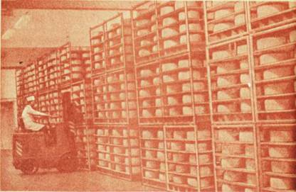

Сыр созревает

Сырохранилище, где созревает сыр, — святая святых сыродельного завода. Здесь камеры — холодные и теплые. В них — аккуратно уложенные на полки стеллажей или передвижных контейнеров головки, цилиндры, бруски сыра. Тут же — термометры и психрометры; температура воздуха поддерживается с точностью до 1–2 °C, влажность — до 2–3 %.
В камерах сырохранилища под действием сычужного фермента и ферментов микрофлоры продолжается и практически завершается процесс созреванкя сыра.
Для каждого вида сыра характер созревания имеет свои особенности, которыми определяется, в частности, и продолжительность этого процесса. Если, например, голландский сыр созревает 60 дней, то швейцарский — до 180 дней.
Несколько месяцев, пока сыр находится здесь, мастер и рабочие завода не перестают заботиться о нем. Сыр периодически переворачивают, чтобы не нарушалась его форма, лучше была корка, равномерно распределилась соль; моют, когда обнаружат на нем плесень; иногда перемещают в другое отделение хранилища, где иные температурные условия.
Значительно снижаются трудовые затраты, когда сыр созревает в специальной полимерной пленке, в которой он поступает и на прилавки магазинов. Это так называемый бескорковый сыр. Вернее, корка у него есть, но более тонкая, чем у сыра, созревающего под парафином; она чистая, съедобная (ведь с коркой теряется до 7 % сыра). В пленке спускаются сыр российский, чеддер, голландский брусковый и др.
К каждому сыру — свой подход. Швейцарский созревает при одной температуре, голландский — при другой. Когда на поверхности костромского сыра, например, появится так называемая сырная слизь, ее удаляют, а слизь на латвийском сыре, наоборот, культивируют, потому что микрофлора ее участвует в создании своеобразных свойств данного продукта.
Интересных сведений о таинствах, происходящих в камерах сырохранилища, можно привести множество.
Несколько слов о созревании сыра. В чем его сущность? В глубоких биохимических превращениях сырной массы в результате великой жизненной энергии мельчайших живых организмов, их ферментов, действующих в ней в течение всего периода созревания.
В переводе на общедоступный язык созревание — это процесс, во время которого сыр приобретает желтоватый цвет, специфический характерный для каждого его вида вкус, более или менее нежну консистенцию и так называемый рисунок — глазки круглой, овальной или другой формы, корка сыра становится плотной и в то же время эластичной.
Во время созревания белок постепенно превращается в простые соединения, хорошо усвояемые организмом человека, в частности в свободные аминокислоты, в том числе и незаменимые. Кстати, ферментативный распад в сыре близок к тому, который происходит с белком в органах пищеварения человека. Превращения белка в определенной степени сказываются и на консистенции сырного теста, оно становится мягким. Аминокислоты создают вкусовой фон сыра, а некоторым из них приписывается влияние на оттенки его вкуса. Немалую роль в этом играет и молочная кислота, дающая ощущение кисловатого вкуса. Несомненно, что и жир влияет на вкус сыра. Но еще много неясного в том, как образуются вкусовые вещества сыра, исследования этого процесса продолжаются.

Это сырохранилище, здесь сыр созревает.
Рисунок разных видов сыра неодинаков. В голландском — глазки округлые, мелкие, расположены часто, в швейцарском — крупные, но встречаются реже, в российском — неопределенной формы. Глазки появляются в местах прорыва газов, образующихся в ходе микробиологических процессов, между спрессованными сырными зернами. В швейцарском сыре объем пустот может достигать 20 % всего объема круга.
Когда разрез сыра украшает типичный, свойственный ему рисунок, то как правило, хороши вкус, аромат и консистенция его.
И какое же удовольствие может доставить сыр со «слезой», в котором глазки. наполнены сырным соком! Это хорошо созревший сыр высокого качества.
Еще не все тайны созревания сыра раскрыты. Ученые продолжают изучать этот сложный биохимический процесс.
Но вернемся в сырохранилище. Близится конец созревания сыра на заводе. К этому времени мастер имеет полное представление о качестве продукта. Для этого он пользуется простыми традиционными способами, которые, как правило, не подводят.
В руках у мастера цилиндр костромского сыра. Основание и верхняя поверхность его несколько выпуклы, боковые стороны слегка округлы. При ударе специальным молоточком сыр издает мягкий, чистый, отчетливый и однотонный во всех местах звук. У такого сыра, как правило, хороший рисунок, приятный вкус, пластичная консистенция.
Но любые способы определения качества сыра заменит органолептическая проба. И мастер вводит в сыр щуп — прибор, сделанный из никелированной или нержавеющей стали, поворачивает его и вынимает цилиндрик ароматно пахнущего сыра. По этой пробе оценивают рисунок, цвет, консистенцию, вкус и запах продукта.
Итак, сыр готов. Его упаковывают в ящики и отправляют для хранения на базу или на холодильник. Отсюда он поступает в магазины.
Таков сложнейший процесс превращения молока в сыр.